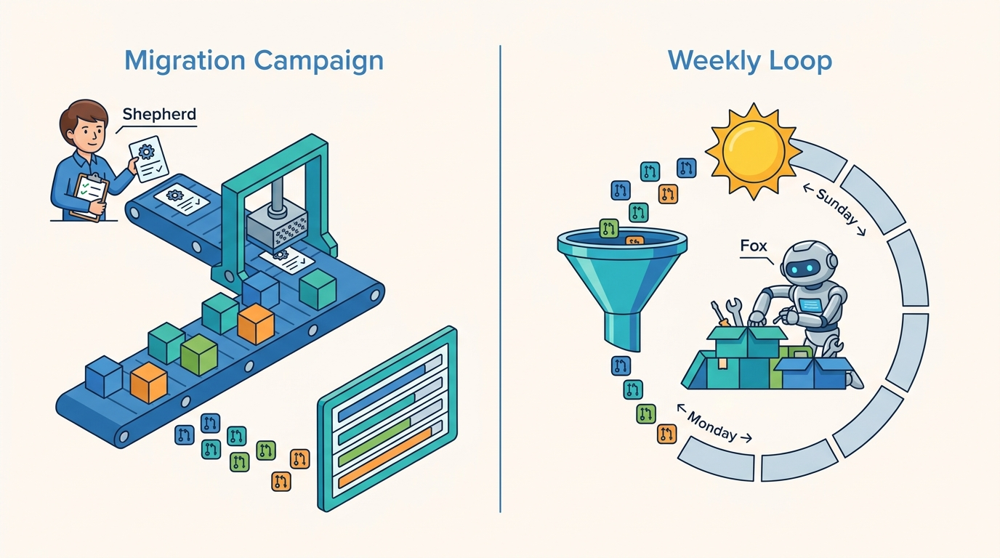

Part III — LIFECYCLE: The Feature Path, Rewired
Shepherd and Fox: From Migration Campaigns to Self-Improving Codebases

Image generated by Google Gemini (gemini-3-pro-image-preview)
Part III — LIFECYCLE: The Feature Path, Rewired

Image generated by Google Gemini (gemini-3-pro-image-preview)